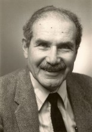

Please note: the AAS Obituaries are temporarily being hosted on this website while their full content is being ingested into the PubPub publishing platform newly adopted by the Bulletin of the American Astronomical Society. When the migration is complete, your existing links will take you to the final, migrated content. Contact peter.williams@aas.org with any questions.
Harold Zirin (1929-2012)
Dr. Harold Zirin, an emeritus professor of astrophysics at the California Institute of Technology, died on January 3, 2012, in Pasadena after a long battle with debilitating chronic obstructive pulmonary disease (COPD). His passion for solar astronomy led his undergraduate students in the 1970s to produce a comic book of him as an unassuming professor who became the super-hero “Captain Corona” whenever he stepped into a solar observatory.
Hal was born in 1929 in Boston to immigrants from Russia and the Galician region of eastern Poland; he grew up in Bridgeport, Connecticut. Hal liked to recall that he had come a long way from helping out as a youngster on a chicken farm in New Jersey. His childhood interest in astronomy was aroused by a view of the moon’s craters and mountains through a young friend’s telescope. Hal’s precocity, and a telescope that he built, won him a Westinghouse Talent Search Prize and a Pepsi Cola Scholarship for Connecticut in 1946. These achievements came to the attention of the astronomer Bart Bok, who attracted him to Harvard where he stayed through completion of his Ph.D. in 1953.
After graduation, Hal worked briefly at the Rand Corporation in Santa Monica, CA. But his career there was cut short by failure to obtain security clearance because his father was a member of the Communist Party. Instead, he returned to Harvard as a teaching fellow and in 1954 he joined the High Altitude Observatory in Boulder, Colorado, a center for solar studies. There, George Gamov introduced him to Mary Fleming,and they were married in 1957.
Mary recalls how, in 1960-1961, she and Hal traveled by car to the Crimean Astrophysical Observatory, in perhaps the first scientific exchange with the U.S. that the Soviet Union permitted outside major cities. There, the six months of hands-on experience with solar telescopes and instrumentation convinced Hal of the importance of continuous solar observations at high angular resolution. This fruitful conviction was one of the most important lessons Hal passed on to students and post-docs who worked with him in later years.
In 1964 Hal accepted a professorship in astrophysics at the California Institute of Technology. A search of varied sites for high resolution solar observations was undertaken with the support of the noted Caltech physicist Robert Leighton. Reputedly, after careful measurements all over Southern California, the steadiest air was found in the Caltech parking lot! But the observatory site was chosen high in the San Bernardino mountains on the north shore of Big Bear Lake. There, steady air over the lake combined with clearer sky, promised observations even of faint structures in the sun’s outer, coronal atmospheric layers.
Hal was a born entrepreneur and with a small grant from Caltech and additional funds from the Fleischman Foundation, he built the Big Bear Solar Observatory (BBSO) and its support facilities. He also led solar-astronomy research at Caltech's Owens Valley Radio Observatory (OVRO) and developed that observatory's solar interferometer. Observations of the amazingly detailed solar structures from BBSO and OVRO produced many interesting insights into solar magnetism, flares, and magneto-hydrodynamic waves. In the 1960’s Hal’s fascination with the sun’s detailed structure was ahead of its time and, in some circles, this earned him a reputation as a “solar dermatologist.” Since then, all solar astronomers have come to recognize the importance of understanding solar phenomena at the smallest observable scales.
Hal’s achievements attracted an international group of students and post – docs, many of whom went on to make important contributions to understanding of the sun. At regular lunches he organized with solar researchers in the Caltech physics department and at nearby Carnegie Observatories, the sometimes more measured research approach of these colleagues complemented Hal’s ebullient style to produce valuable insights into the workings of our star.
In hopes of achieving full time coverage of rapidly evolving solar phenomena, Hal travelled in the 1970s from northern Sweden to the Negev Desert in Israel, where for some time he ran a solar telescope in cooperation with Tel Aviv University. Later, scientists trained at BBSO created successful solar observatories on lakes in India and China. Hal also mounted solar eclipse expeditions in Ceylon (Sri Lanka) in 1952, in the southern jungle of Mexico in 1970, and in Hawaii in 1991.
Hal’s broad knowledge of the sun is laid out in over 250 scientific papers and in his widely used texbook Astrophysics of the Sun (2nd edition, 1988). Unfortunately, increasing hypoxia prevented him from completing the third edition.
Harold Zirin’s generosity, intellectual capacity and energy will be greatly missed by all who were fortunate to work with him. He is survived by his wife, Mary Zirin, a free-lance translator-researcher in Russian literature; a son, Daniel Zirin, of Hastings Ranch, Colorado; a daughter, Dana Haigney of Altadena, California; and two grandsons: William and Jacob. The family asks that donations be made in Zirin’s name to National Jewish Health in Denver, Colorado.
From David Brin: Zirin was a popular professor at Caltech. Among many humorous, student-made tributes attesting to this were two editions of Captain Corona comic books, the first hand drawn by Dick Trtek and a second by David Brin (later an astronomer and science fiction author). The nickname Captain Corona stuck and Zirin wore it with pride.
From Jay Pasachoff, editor (eclipse@williams.edu) We have copies of the cover of the first edition and 8 pages from the second edition. Anybody reading this who has additional pages, please let us know.
http://en.wikipedia.org/wiki/Harold_Zirin
Obituary written by: Peter Foukal (Nahant, MA)
Additional links:
BAAS Citation: BAAS, 2012, 44, 008